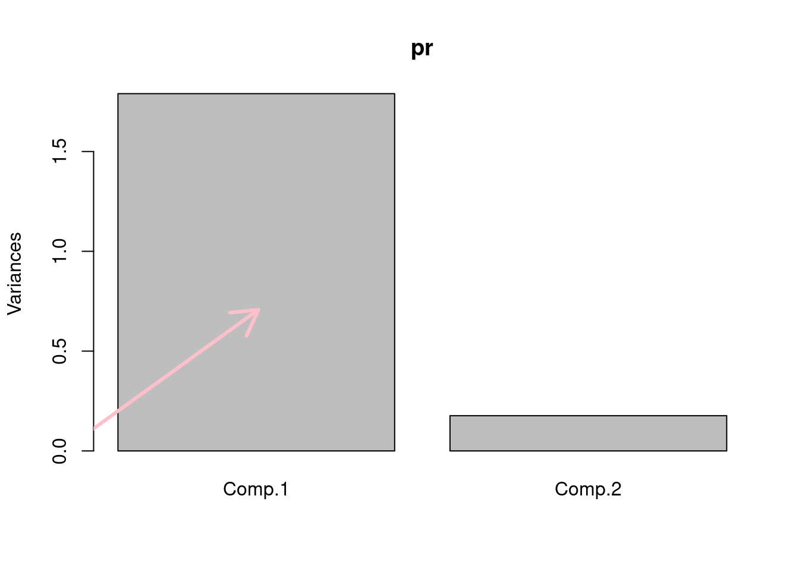

4.2 Chapter 4 Exercises
Data set and packages
expFile=system.file("extdata", "leukemiaExpressionSubset.rds", package="compGenomRData")
mat=readRDS(expFile)
library(pheatmap)
library(cluster)
library(fastICA)
library(Rtsne)## 1
x <- scale(mat)
y <- scale(log2(mat))
boxplot(mat) 
boxplot(x) boxplot(y)## 2
annotation_col = data.frame(LeukemiaType =substr(colnames(mat),1,3))
rownames(annotation_col)=colnames(mat)
pheatmap(mat,show_rownames=FALSE,show_colnames=FALSE,
annotation_col=annotation_col,
scale = "none",clustering_method="ward.D2",
clustering_distance_cols="euclidean")
pheatmap(mat,show_rownames=FALSE,show_colnames=FALSE,
annotation_col=annotation_col,
scale = "none",clustering_method="ward.D",
clustering_distance_cols="euclidean")
### IMO this one looks the bet to me
pheatmap(x,show_rownames=FALSE,show_colnames=FALSE,
annotation_col=annotation_col,
scale = "none",clustering_method="ward.D",
clustering_distance_cols="euclidean")
pheatmap(y,show_rownames=FALSE,show_colnames=FALSE,
annotation_col=annotation_col,
scale = "none",clustering_method="ward.D",
clustering_distance_cols="euclidean")
pheatmap(mat,show_rownames=FALSE,show_colnames=FALSE,
annotation_col=annotation_col,
scale = "column",clustering_method="ward.D",
clustering_distance_cols="euclidean")## 3 number of clusters
set.seed(101)
pamclu=cluster::pam(t(mat),k=5)
plot(silhouette(pamclu),main=NULL)
# even when mat is changed with scaled data it looks the same
Ks=sapply(2:7,
function(i)
summary(silhouette(pam(t(mat),k=i)))$avg.width)
plot(2:7,Ks,xlab="k",ylab="av. silhouette",type="b", pch=19)
## 4
set.seed(101)
# define the clustering function
pam1 <- function(x,k) list(cluster = pam(x,k, cluster.only=TRUE))
#calculate the gap statistic
pam.gap= clusGap(t(mat), FUN = pam1, K.max = 8,B=50)
#plot the gap statistic accross k values
plot(pam.gap, main = "Gap statistic for the 'Leukemia' data")
## 5
#data all together doesn't tell you anything useful
plot(mat, pch = 19, col=as.factor(annotation_col$LeukemiaType)) princomp(x)
## Call:
## princomp(x = x)
##
## Standard deviations:
## Comp.1 Comp.2 Comp.3 Comp.4 Comp.5 Comp.6 Comp.7 Comp.8
## 5.3980464 3.1529029 2.3247277 1.5687082 1.1441699 1.0163041 0.9208557 0.8361879
## Comp.9 Comp.10 Comp.11 Comp.12 Comp.13 Comp.14 Comp.15 Comp.16
## 0.8063709 0.7415128 0.7349786 0.6843525 0.6582846 0.6364035 0.6263027 0.6153725
## Comp.17 Comp.18 Comp.19 Comp.20 Comp.21 Comp.22 Comp.23 Comp.24
## 0.6003703 0.5690649 0.5493224 0.5247540 0.5098144 0.4898736 0.4824333 0.4733643
## Comp.25 Comp.26 Comp.27 Comp.28 Comp.29 Comp.30 Comp.31 Comp.32
## 0.4628049 0.4496037 0.4392058 0.4247633 0.4218220 0.3913511 0.3829944 0.3730724
## Comp.33 Comp.34 Comp.35 Comp.36 Comp.37 Comp.38 Comp.39 Comp.40
## 0.3649651 0.3553183 0.3382413 0.3265285 0.3228467 0.3163246 0.3085226 0.2966597
## Comp.41 Comp.42 Comp.43 Comp.44 Comp.45 Comp.46 Comp.47 Comp.48
## 0.2874149 0.2799747 0.2500159 0.2453183 0.2348965 0.2282003 0.2246586 0.2127631
## Comp.49 Comp.50 Comp.51 Comp.52 Comp.53 Comp.54 Comp.55 Comp.56
## 0.2052918 0.1851652 0.1791513 0.1739143 0.1657289 0.1652361 0.1570080 0.1543267
## Comp.57 Comp.58 Comp.59 Comp.60
## 0.1381601 0.1305611 0.1283559 0.1184983
##
## 60 variables and 1000 observations.
screeplot(princomp(x))#create the subset of the data with two genes only. notice that we transpose the matrix so samples are on the columns
par(mfrow=c(1,2))
sub.mat=t(mat[rownames(mat) %in% c("ENSG00000100504","ENSG00000105383"),])#create the subset of the data with two genes only. notice that we transpose the matrix so samples are on the columns
plot(scale(mat[rownames(mat)=="ENSG00000100504",]),
scale(mat[rownames(mat)=="ENSG00000105383",]),
pch=19,
ylab="CD33 (ENSG00000105383)",
xlab="PYGL (ENSG00000100504)",
col=as.factor(annotation_col$LeukemiaType),
xlim=c(-2,2),ylim=c(-2,2))
#create the legend for the Leukemia types
legend("bottomright",
legend=unique(annotation_col$LeukemiaType),
fill =palette("default"),
border=NA,box.col=NA)# calculate the PCA only for our genes and all the samples
pr=princomp(scale(sub.mat))
#screeplot of PCA
screeplot(pr)
#plot the direction of eigenvectors
#pr$loadings returned by princomp has the eigenvectors
arrows(x0=0, y0=0, x1 = pr$loadings[1,1],
y1 = pr$loadings[2,1],col="pink",lwd=3)
arrows(x0=0, y0=0, x1 = pr$loadings[1,2],
y1 = pr$loadings[2,2],col="gray",lwd=3)
#plot the samples in the new coordinate system
plot(-pr$scores,pch=19,
col=as.factor(annotation_col$LeukemiaType),
ylim=c(-2,2),xlim=c(-4,4))
#plot the new coordinate basis vectors
arrows(x0=0, y0=0, x1 =-2,
y1 = 0,col="pink",lwd=3)
arrows(x0=0, y0=0, x1 = 0,
y1 = -1,col="gray",lwd=3)## 6
par(mfrow=c(1,2))
d=svd(scale(mat)) # apply SVD
assays=t(d$u) %*% scale(mat) # projection on eigenassays
plot(assays[1,],assays[2,],pch=19,
col=as.factor(annotation_col$LeukemiaType))
pr=prcomp(t(mat),center=TRUE,scale=TRUE) # apply PCA on transposed matrix
# plot new coordinates from PCA, projections on eigenvectorssince the matrix is transposed eigenvectors represent
plot(pr$x[,1],pr$x[,2],col=as.factor(annotation_col$LeukemiaType))## 7
# apply ICA
ica.res=fastICA(t(mat),n.comp=2)
# plot reduced dimensions
plot(ica.res$S[,1],ica.res$S[,2],col=as.factor(annotation_col$LeukemiaType)) ## 8
set.seed(42) # Set a seed if you want reproducible results
tsne_out <- Rtsne(t(mat),perplexity = 10) # Run TSNE
# image(t(as.matrix(dist(tsne_out$Y))))
# Show the objects in the 2D tsne representation
plot(tsne_out$Y,col=as.factor(annotation_col$LeukemiaType),pch=19)
legend("bottomleft", # create the legend for the Leukemia types
legend=unique(annotation_col$LeukemiaType),
fill =palette("default"),
border=NA,box.col=NA)